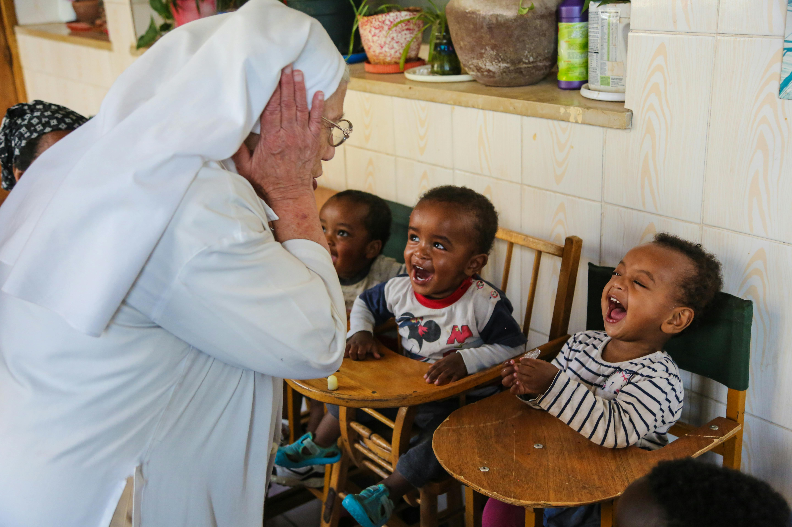

Providing support, love and a brighter future for those in need.
`It is more than just lending a helping hand to those in need but to give all the neglected children a chance to live a better life and a chance to thrive.
Door of Hope is an organisation that is dedicated to providing a safe place for abandoned babies and helps them find loving families. We believe that we are here to cherish and most importantly make a difference in each baby's life.

YOU CAN MAKE AN IMPACT ON INNOCENT LIFES TODAY!